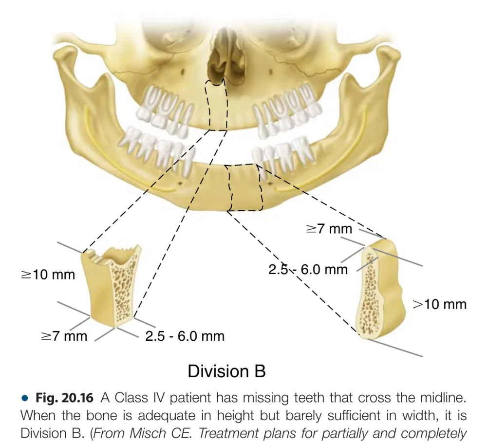
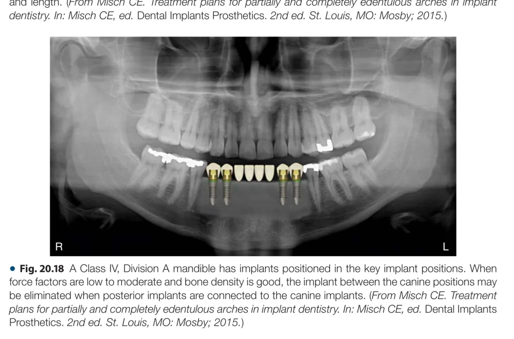

نسخه استخراجشده؛ ترجمه یا تأیید علمی انجام نشده است. وضعیت: captured
تعریف کلاس III: «بیمار کلاس III یک فضای بیدندان بیندندانی دارد.»
یعنی فضا از هر دو سو با دندان طبیعی احاطه شده — و همین، این کلاس را از کلاس I و II جدا میکند، چون در آن دو، فضا از یک سو باز است.
و دو زیرگروه شایع دارد:
«معمولاً دو نوع شایع بیمار کلاس III که برای ایمپلنت مشاوره میگیرند، یا یک دندان تک غایب دارند یا یک دهانهی بیدندان خلفی بلند.»
به این دو سر طیف دقت کن. بیمار با یک دندان غایب، همان موضوع یونیت ۳٫۱ است — و بیمار با دهانهی بلند، همان جایی است که قواعد موقعیت کلیدی یونیت ۲٫۲ حیاتی میشود.
پس کلاس III یک کلاس واحد نیست؛ یک بازه است. و آنچه دو سرش را به هم وصل میکند، وجود تکیهگاه طبیعی در هر دو انتها است.
و همین ویژگی، یک مزیت بزرگ میدهد: در کلاس III، گزینهی پروتز پارسیل ثابت متعارف معمولاً روی میز است — چون هر دو انتها تکیهگاه دارند. در کلاس I و II چنین نیست.
ولی از یونیت ۳٫۱ میدانی که این گزینه هزینه دارد: پروتز پارسیل ثابت اغلب هر ۱۰ تا ۲۰ سال باید تعویض شود، و دندانهای تکیهگاه در معرض پوسیدگی و درمان ریشه قرار میگیرند.
و اکنون دیویژن C در کلاس III — که تفاوت دو فک را دوباره نشان میدهد:
در ماگزیلا: «وقتی دیویژن C در بیماران کلاس III یافت میشود، شایعترین طرح درمان در ماگزیلا، افزایش استخوان پیش از جایگذاری ایمپلنت و یک پروتز ایمپلنت مستقل است.»
در مندیبل — و این توصیه محتاطانه است:
«در مندیبل، یک پروتز ثابت سنتی برای حجم استخوان دیویژن C در بیماران کلاس III اغلب باید در نظر گرفته شود، چون گرافت استخوان برای ارتفاع دشوار است، به مهارت افزوده نیاز دارد، و کمتر از ماگزیلا قابل پیشبینی است.»
این جمله را نگه دار، چون یک قاعدهی کلی را میسازد:
افزایش ارتفاع در ماگزیلا (گرافت سینوس) قابل پیشبینی است؛ افزایش ارتفاع در مندیبل خلفی نیست.
و از یونیت ۲٫۳ میدانی چرا: آنجا آموختی که «افزایش استخوان در عرض قابل پیشبینیتر از ارتفاع است» و اینکه پیشبینیپذیری گرافت با شمار دیوارههای استخوانی در تماس با گرافت همبستگی دارد.
و گرافت سینوس دقیقاً به همین دلیل ممتاز است: کف سینوس یک فضای محصور است — دیوارههای استخوانی از چند سو گرافت را در بر میگیرند. در مقابل، افزایش ارتفاع روی کرست مندیبل یک گرافت اُنلی است، یعنی نزدیک به نقص یکدیواره — همان که کمترین پیشبینیپذیری را دارد.
پس این توصیهی بالینی، پیامد مستقیم یک اصل زیستی است که در یونیت استخوان موجود آموختی.

تعریف کلاس IV: «در بیمار کلاس IV، فضای بیدندان قدامی از خط وسط عبور میکند.»
و این تعریف ساده، سه پیامد جدی دارد.
پیامد یکم — زیبایی و گفتار:
«یک کانتیلور اغلب از بدنههای ایمپلنت ایجاد میشود تا لبهی انسیزال ماگزیلا در موقعیت درست برای زیبایی و گفتار قرار گیرد.»
به این جمله دقت کن — کانتیلور اینجا اغلب انتخاب نیست، ناگزیر است.
و دلیلش را از یونیت ۲٫۱ میدانی: پس از کشیدن دندان، عرض کرست قدامی ماگزیلا تا ۴۰ درصد در دو سال نخست کاهش مییابد و کرست به سمت کام جابهجا میشود. کمبود حجم استخوان قدامی ماگزیلا شایع است و اگر پیش از جایگذاری گرافت نشود، ایمپلنت پالاتالتر از ریشهی طبیعی قرار میگیرد؛ و برای برگرداندن لبهی انسیزال به موقعیت درست، پروتز باید به سمت فاسیال کانتیلور شود.
و این یک کانتیلور افقی است، همان چیزی که در یونیت ۲٫۲ کوشیدی کوچکش کنی — و ممانی که میسازد از همتای مندیبلیاش بزرگتر است. پس در کلاس IV، تنش میان زیبایی و بیومکانیک ناگزیر است — و باید آگاهانه مدیریت شود.
پیامد دوم — موقعیتهای کلیدی:
در بیمار کلاس IV دیویژن A، «ایمپلنتها در موقعیتهای کلیدی ایمپلنت با عرض ایدهآل قرار میگیرند.»
و یک قید مهم: «موقعیتهای کلیدی ایمپلنت باید انتخاب شوند، از جمله یک ایمپلنت میان موقعیتهای کانین.»
این را با قاعدهی چهارم یونیت ۲٫۲ کنار هم بگذار. آنجا آموختی که قوس یک پنتاگون باز است و بخش قدامی یکی از پنج ضلع آن است. وقتی فضای بیدندان از خط وسط عبور میکند، آن ضلع قدامی کاملاً درگیر شده — پس دستکم یک ایمپلنت میان دو کانین لازم است.
و اگر تنها دو ایمپلنت در موقعیت کانین بگذاری و بین آنها هیچ نگذاری، یک دهانهی بلند در قدام میسازی که از یونیت ۲٫۲ میدانی خمش و بار برشی تولید میکند.
ولی یک استثنای دقیق و مشروط هست که باید عیناً بدانی:
«وقتی عوامل نیرو کم تا متوسط و تراکم استخوان خوب باشد، ایمپلنت میان موقعیتهای کانین ممکن است حذف شود، بهشرطی که ایمپلنتهای خلفی به ایمپلنتهای کانین متصل شوند.»
سه شرط را با هم بشمار: عوامل نیروی کم تا متوسط، تراکم استخوان خوب، و اتصال ایمپلنتهای خلفی به کانینها.
شرط سوم مهمترین و کمتوجهترین است. اسپلینت کردن، دو کانین را از دو تکیهگاه مستقل به بخشی از یک واحد پیوسته تبدیل میکند — و از یونیت ۲٫۲ میدانی که اسپلینت گسترهی A-P را افزایش میدهد و بار را روی کل زنجیره پخش میکند.
پس این استثنا در واقع میگوید: میتوانی ایمپلنت میانی را حذف کنی، ولی تنها اگر چیز دیگری جایش را بگیرد — و آن چیز، پیوستگی سازه است.
پیامد سوم — دیویژن C و D:
«نخستین گزینه برای بیمار کلاس IV، استفاده از روشهای افزایش استخوان است.»
و ترتیب منطقیاش: «پس از افزایش، موقعیتهای کلیدی ایمپلنت و اندازههای ایدهآل ایمپلنت میتوانند برای پشتیبانی یک پروتز ثابت به کار روند.»
و برای دیویژن C-w: «افزایش عرض استخوان، سپس ایمپلنتها در موقعیتهای کلیدی.» و در ماگزیلا، گرافت بلوک استخوانی برای C-w توصیه میشود.
و اینجا تفاوت کلاس IV با کلاس I را ببین — که همان نکتهی درس نخست بود:
دیدی که استئوپلاستی در کلاس IV میتواند تهاجمیتر از کلاس I باشد، «چون ایمپلنتها عمدتاً در نواحی قدامیاند» و لندمارکهای مقابل (سینوس یا کانال) در آنجا نزدیک نیستند.
پس محدودیت استئوپلاستی در کلاس I آناتومیک است، ولی در کلاس IV لندمارک مقابل مانع اصلی نیست — هرچند در دیویژن B کلاس IV، بهخاطر زیبایی، افزایش استخوان انتخاب رایجتر است (پایینتر میبینی). و این دقیقاً همان چیزی است که ترکیب کلاس و دیویژن به تو میگوید و هیچکدام از دو دستگاه بهتنهایی نمیگفتند.
و دو قاعدهی دقیق دیگر در بحث دیویژن A و B کلاس IV:
قاعدهی یکم — و به دقت واژههایش توجه کن:
«بهعنوان یک قاعدهی کلی، پروتز نهایی باید کاملاً ایمپلنتپشتیبان باشد، و دو ایمپلنت باید هر بخش از سه ریشهی دندان غایب را پشتیبانی کنند (نه سه تاج غایب)، تا زمانی که عوامل نیرو مساعد باشند.»
«سه ریشهی دندان غایب، نه سه تاج غایب» — این تمایز حیاتی است.
دندانهای خلفی چندریشهایاند، پس سه دندان خلفی غایب معمولاً بیش از سه ریشه دارند — و آنجا دو ایمپلنت کافی نیست. پس شمارش را بر پایهی ریشه انجام بده، نه بر پایهی تاج. و در پرهماگزیلا قاعدهی کلی سختگیرانهتر است: یک ایمپلنت برای هر دندان، مگر آنکه تحلیل فاسیال طول در دسترس را کم کرده باشد؛ در قدام مندیبل معمولاً یک ایمپلنت دو دندان را جایگزین میکند.
و یک شرط که این قاعده را وارونه میکند:
«دندانهای طبیعی متحرک مجاور دهانهی بیدندان، بارهای بیشتری بر ایمپلنتها وارد میکنند. بنابراین یک ایمپلنت برای هر ریشهی غایب ممکن است اندیکاسیون داشته باشد.»
این همان الگوی کلاس I است که در درس پیش دیدی — همسایههای متحرک، نیاز به ایمپلنت را بالا میبرند.
قاعدهی دوم — و این دربارهی کانین است:
«کانین یک تکیهگاه طبیعی مهم است. وقتی کانین و دو دندان مجاور غایب باشند، یک پروتز ثابت منع مصرف دارد.»
این را با یونیت ۲٫۲ کنار هم بگذار. آنجا آموختی که کانین کلیدی است چون هر دو همسایهاش از ضعیفترین دندانهای دهاناند. اینجا میبینی که وقتی خودِ کانین هم غایب باشد، پروتز ثابت متعارف بهکلی از دستور خارج میشود — و ایمپلنت تنها گزینهی ثابت باقی میماند.
و یک هشدار دربارهی ایمپلنت باریک در ناحیهی قدامی:
«اگر ریج دیویژن B و برای ایمپلنتهای ریشهای دیویژن A از نظر عرض ناکافی باشد، ایمپلنتهای باریک، زیبایی و روشهای بهداشت دهان را به خطر میاندازند.»
و توصیه: «افزایش استخوان بیشتر اوقات در نواحی بیدندان قدامی با استخوان باریک به کار میرود، و ایمپلنتهای دیویژن A برای بهبود کانتور نهایی تاج، ظاهر زیبایی و نگهداری روزانه اندیکاسیون دارند.»
پس در ناحیهی قدامی، برخلاف ناحیهی خلفی، پاسخ به ریج باریک «ایمپلنت باریک» نیست — «گرافت» است.
و یک هشدار از یونیت ۳٫۱ که اینجا دوباره مهم میشود: ناحیهی قدامی ماگزیلا اغلب پیکربندی ساعتشنی با تقعر لابیال دارد. در چنین ریجی، استئوپلاستی عرض را زیاد نمیکند — پس پیش از تصمیم به تراش، شکل مقطع را با تصویربرداری بررسی کن.
